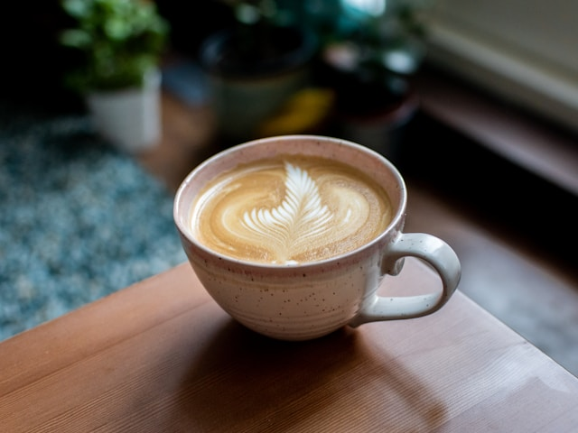

Flat White
Our beans rotate monthly from the finest growers around the world.
As for our Baristas, think of a sushi chef. Think of the time and dedication it takes to perfect the art of sushi making, then apply that to coffee. Our baristas have spent 10+ years in the coffee and hospitality industries to perfect their craft, and we pay them like it. Plus, They've spent 2 years perfecting their latte art to not only give you the tastiest cup of coffee you've ever had, but to give you the most aesthetic cup too.